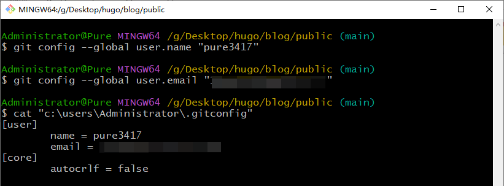
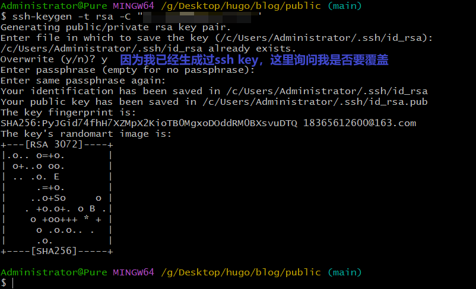
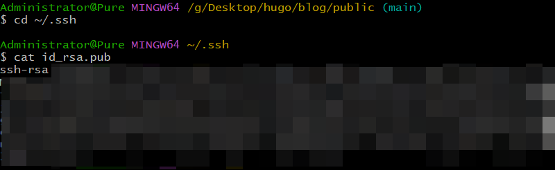
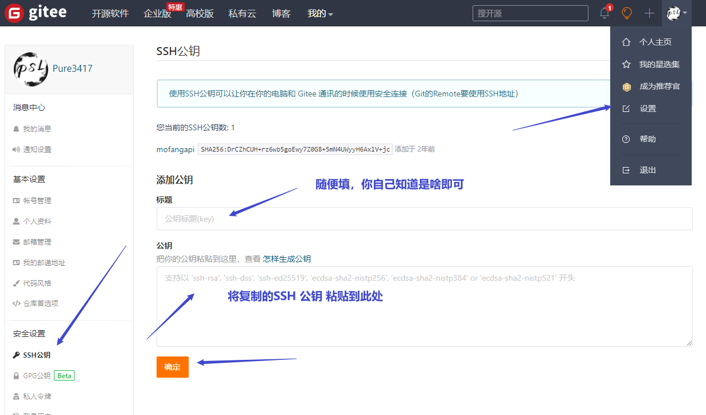
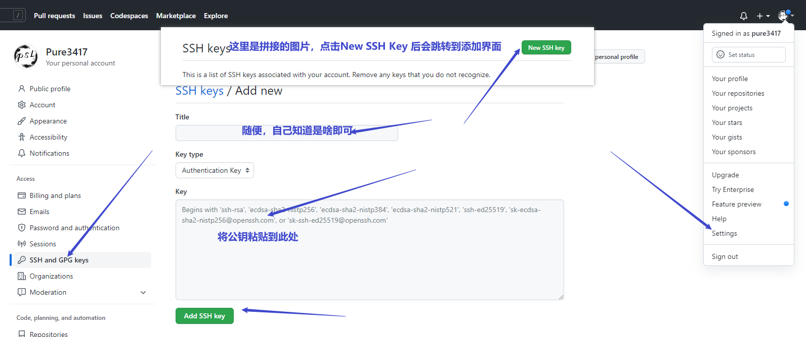

Git基本配置
文章目录
前提已安装好Git，Git安装流程请查看Git的卸载与安装
配置用户和邮箱
|
|

说明：签名的作用是区分不同操作者身份。用户的签名信息在每一个版本的提交信息中能够看到，以此确认本次提交是谁做的。 Git首次安装必须设置一下用户签名，否则无法提交代码。
注意：这里设置用户签名和将来登录 GitHub/Gitee（或其他代码托管中心）的账号没有任何关系。
配置SSH Key
作用
- ssh指secure shell（一种安全的网络协议），git使用这种协议进行远程加密登录。
- ssh登录安全性由非对称加密保证，产生密钥时，一次产生两个密钥，一个公钥，一个私钥，在git中一般分别命名为id_rsa.pub, id_rsa
- ssh方式单独使用非对称的秘钥进行认证和加密传输，和账号密码分离开来，不需要账号也可以访问repo。
- git基于多种传输协议，其中最常用的就是https和ssh。都是为了数据传输安全，那么设置ssh密钥的目的是为了节省输入用户名密码的过程，同时保证传输安全。并不是必须设置。
生成SSH Key
|
|
注意：这里的 xxxxx@xxxxx.com 只是生成的 sshkey 的名称，并不约束或要求具体命名为某个邮箱。（来自于Gitee） 现网的大部分教程均讲解的使用邮箱生成，其一开始的初衷仅仅是为了便于辨识所以使用了邮箱。（来自于Gitee）
执行完命令，一直回车即可，因为我曾经生成过ssh key，所有会提示我是否要覆盖原有的

查看复制SSH Key
SSH密钥生成后会，生成两个文件：id_rsa为私钥，id_rsa.pub为公钥。Linux用户在~.ssh/目录下，Windows用户在C:\Users\Administrator\\.ssh目录下，
|
|

添加SSH Key
gitee
登录你的GItee账户—>你的头像—>设置—>SSH公钥

GitHub
登录你的GitHub账户—>你的头像—>setting—>SSH and GPG Keys—>New SSH Key

文章作者 Pure3417
上次更新 2023-01-26